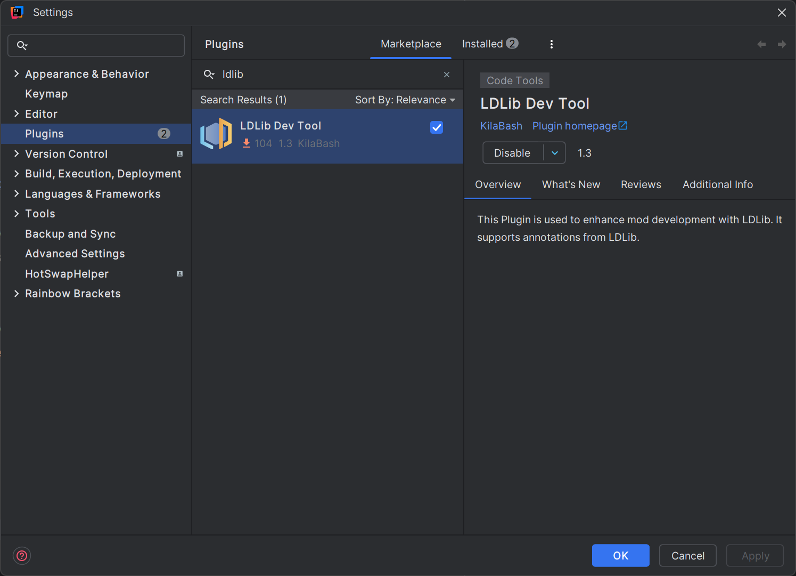

注释
我们在此页面中显示所有注释及其用法。
!!!注意“LDLib开发工具” 
这极大地帮助您利用 LDLib2 的功能。特别是LDLib2的所有注解都已支持使用。
{kind=link}
常用注解
@DescSynced注释一个字段，该字段的值（服务器端）要同步到客户端（具体为remote）
@DescSynced
int a;
@DescSynced
private ItemStack b = ItemStack.EMPTY;
@DescSynced
private List<ResourceLocation> c = new ArrayList<>();
@Persisted注释一个字段，该字段的值（服务器端）将被写入/读取到BlockEntities的nbt。
String key()代表nbt中的标签名称。默认值——使用字段名称。
它的 nbt/json 如下所示：```json { "fluidAmount": 100, "isWater": true }
`boolean subPersisted()` 如果为 true，它将根据其 `non-null` 实例包装字段的内部值。
这对于不允许创建新实例的`final` 实例非常有用。如果字段设置`subPersisted = true`，LDLib2将执行以下操作：
- 如果该字段继承自`INBTSerializable<?>`，它将尝试使用其api进行序列化。- 否则，它将序列化字段的内部值并将其包装为映射。
```java
@Persisted(subPersisted = true) // @Persisted is also fine here, because INBTSerializable is also supported as a read-only field.
private final INBTSerializable<CompoundTag> stackHandler = new ItemStackHandler(5);
@Persisted(subPersisted = true)
private final TestContainer testContainer = new TestContainer();
public static class TestContainer {
@Persisted
private Vector3f vector3fValue = new Vector3f(0, 0, 0);
@Persisted
private int[] intArray = new int[]{1, 2, 3};
}
它的 nbt/json 如下所示：```json { "stackHandler": { "Size": 5, "Items": [], }, "testContainer": { "vector3fValue": [0, 0, 0], "intArray": [1, 2, 3], } }
---
###`@LazyManaged`将字段标记为延迟管理的注释。这意味着该字段只会手动或自动标记为脏。该注解对于不经常更新的字段，或者批量更新的字段很有用。
``` java
@DescSynced
@Persisted
int a;
@DescSynced
@Persisted
@LayzManaged
int b;
public void setA(int value) {
this.a = value; // will be sync/persist automatically, in general
}
public void setB(int value) {
this.b = value;
markDirty("b"); // mannually notify chagned
}
@ReadOnlyManaged该注解用于标记由用户管理的只读字段。
read-only 类型（例如IManaged 和INBTSerializable<?>）要求字段非空并且字段实例不会更改（最终字段）。
!!!注意“read-only 类型是什么？”read-only 类型指的是始终非空且不可变的字段，并且不确定如何创建该类型的新实例。更多详细信息可以在Types Support中找到。
因为我们不知道如何为这些类型创建新实例。在这种情况下，您可以使用此注释并提供方法来使用 serializeMethod() 存储来自服务器的唯一 ID，并使用 deserializeMethod() 在客户端创建一个新实例。
此外，您还可以通过onDirtyMethod()提供一种方法来自我控制该字段是否已更改。
- onDirtyMethod：指定自定义脏检查的方法。返回是否改变。 java
boolean methodName();
- serializeMethod：返回给定实例的唯一ID（Tag）。 java
Tag methodName(@Nonnull T obj);
- deserializeMethod：通过给定的uid创建一个实例。 java
T methodName(@Nonnull Tag tag)
同步过程（持久化类似）
flowchart LR
A[Start: Check read-only field] --> B{UID == previous snapshot?}
%% Step 1
B -- No --> C[Mark field as dirty<br/>Store latest snapshot] --> D[Sync UID + Value<br/>Notify remote update]
B -- Yes --> E{Value dirty?}
%% Step 2
E -- No --> Z[End]
E -- Yes --> F{Has onDirtyMethod?}
F -- Yes --> G[Use custom method<br/>to check dirty]
F -- No --> H[Use registered read-only type<br/>to check dirty]
%% Step 3
G --> I[Field is dirty] --> D
H --> I
%% Remote side
D --> R[Remote receives update] --> S{UID equal?}
%% Step 4
S -- No --> T[Create new instance<br/>via deserializeMethod] --> U[Update value via read-only type] --> Z
S -- Yes --> U --> Z- 为了检查
read-only字段是否有内部更改，LDLib2 将首先检查唯一 id 是否等于之前的快照。 - 如果not，则将该字段标记为脏，并存储最新的快照。 - 如果true，则转至步骤 2。2. 检查该值与之前的快照相比是否脏。 - 如果onDirtyMethod未设置，LDLib2将根据注册的read-only类型检查dirty。 - 如果true，则使用自定义方法检查是否脏。3. 如果场地脏了。 LDLib2 将同步 uid 和值数据，并要求远程（客户端）更新值。4. 当远程接收到更改时，它会首先检查 uid。 - 如果不相等，则先基于deserializeMethod创建一个新实例。 - 然后根据注册的read-only类型更新值。 例子!!!笔记在此示例中，@Persisted @DescSync @ReadOnlyManaged(serializeMethod = "testGroupSerialize", deserializeMethod = "testGroupDeserialize") private final List<TestGroup> groupList = new ArrayList<>(); public static class TestGroup implements IPersistedSerializable { @Persisted private Range rangeValue = Range.of(0, 1); @Persisted private Direction enumValue = Direction.NORTH; @Persisted private Vector3i vector3iValue = new Vector3i(0, 0, 0); } public IntTag testGroupSerialize(List<TestGroup> groups) { return IntTag.valueOf(groups.size()); } public List<TestGroup> testGroupDeserialize(IntTag tag) { var groups = new ArrayList<TestGroup>(); for (int i = 0; i < tag.getAsInt(); i++) { groups.add(new TestGroup()); } return groups; }onDirtyMethod是不必要的。因为TestGroup继承自IPersistedSerializable，而IPersistedSerializable又继承自INBTSerializable<?>。因此，它是受支持的read-only类型。
@RPCMethod注释一个方法，可以在服务器和远程之间发送RPC数据包。您可以自由定义方法的参数，只要参数支持同步即可，并将 rpc 发送到类中的任何位置。传播事件很有用（c->s / s->c）。!!!笔记如果 RPCSender 被定义为方法的第一个参数。 LDLib2 将提供发件人信息。
确保所有参数都与带注释的方法的参数匹配。
@RPCMethod
public void rpcTestA(RPCSender sender, String message) {
if (sender.isServer()) {
LDLib2.LOGGER.info("Received RPC from server: {}", message);
} else {
LDLib2.LOGGER.info("Received RPC from client: {}", message);
}
}
@RPCMethod
public void rpcTestB(ItemStack item) {
LDLib2.LOGGER.info("Received RPC: {}", item);
}
// methods to send rpc
public void sendMsgToPlayer(ServerPlayer player, String msg) {
rpcToServer(player, "rpcTestA", msg)
}
public void sendMsgToAllTrackingPlayers(ServerPlayer player, String msg) {
rpcToTracking("rpcTestA", msg)
}
public void sendMsgToServer(ItemStack item) {
rpcToServer("rpcTestB", item)
}
rpcToTracking：如果此块已在远程玩家中加载（跟踪），则发送给所有远程玩家。rpcToPlayer：发送给特定玩家rpcToServer：发送到服务器。 在此示例中，您可以在一个方法中发送和接收消息，这是一种简洁的方法。
@UpdateListener使用此注解添加远端同步接收的监听器。
指定当从服务器更新带注释的字段时要调用的方法的名称（远程端）。 第一个参数是旧值，第二个参数是新值。
@DescSynced
@UpdateListener(methodName = "onIntValueChanged")
private int intValue = 10;
private void onIntValueChanged(int oldValue, int newValue) {
LDLib2.LOGGER.info("Int value changed from {} to {}", oldValue, newValue);
}
@ConditionalSynced一般来说，所有用 @DescSynced 注释的字段如果发生更改都会同步。但是，您可能想要控制是否同步，例如条件同步。
LDLib2 提供此注释允许您细粒度控制字段是否应该同步。
@Configurable
@ConditionalSynced(methodName = "shouldSync")
int intField = 10;
public boolean shouldSync(int value) {
return value > 0;
}
@SkipPersistedValue一般来说，所有用@Persisted注解的字段都会在持久化过程中被序列化。但是，您可能希望跳过序列化，例如减少输出大小、跳过未更改的值等。
LDLib2 提供此注释允许您细粒度控制字段是否应该序列化。
@Persisted
int intField = 10;
@SkipPersistedValue(field = "intField")
public boolean skipIntFieldPersisted(int value) {
// 10 is the initial value of this class, there is no need to store it.
return value == 10;
}
BlockEntity 独家!!!笔记这些注解是专门为BlockEntity设计的，使用前请检查Manage BlockEntity。
@DropSaved有时，您希望在打破块时将字段值存储到放置项中。此注释用于标记要保存到放置项的字段。然而，在使用它之前还需要额外的代码工作。```java
public class MyBlock extends Block { @Override public void setPlacedBy(Level level, BlockPos pos, BlockState state, @Nullable LivingEntity placer, ItemStack stack) { if (!level.isClientSide) { if (level.getBlockEntity(pos) instanceof IPersistManagedHolder persistManagedHolder) { // you can use other DataComponents if you want. Optional.ofNullable(stack.get(DataComponents.CUSTOM_DATA)).ifPresent(customData -> { persistManagedHolder.loadManagedPersistentData(customData.copyTag()); }); } } }
@Override
protected List<ItemStack> getDrops(BlockState state, LootParams.Builder params) {
var opt = Optional.ofNullable(params.getOptionalParameter(LootContextParams.BLOCK_ENTITY));
if (opt.isPresent() && opt.get() instanceof IPersistManagedHolder persistManagedHolder) {
var drop = new ItemStack(this);
var tag = new CompoundTag();
persistManagedHolder.saveManagedPersistentData(tag, true);
drop.set(DataComponents.CUSTOM_DATA, CustomData.of(tag));
// you can move this part to LootTable if you want.
return List.of(drop);
}
return super.getDrops(state, params);
}
@Override
public ItemStack getCloneItemStack(BlockState state, HitResult target, LevelReader level, BlockPos pos, Player player) {
// if you want to clone an item with drop data, don't forget it
if (level.getBlockEntity(pos) instanceof IPersistManagedHolder persistManagedHolder) {
var clone = new ItemStack(this);
var tag = new CompoundTag();
persistManagedHolder.saveManagedPersistentData(tag, true);
clone.set(DataComponents.CUSTOM_DATA, CustomData.of(tag));
return clone;
}
return super.getCloneItemStack(state, target, level, pos, player);
}
}
public class MyBlockEntity extends BlockEntity implements ISyncPersistRPCBlockEntity { @Persisted private int intValue = 10; @Persisted @DropSaved private ItemStack itemStack = ItemStack.EMPTY; }
经过上述设置后，MyBlockEntity中`itemStack`的值将在break和clone时存储在itemstack中。并且放置后将恢复存储在 itemstack 中的值。
---
###`@RequireRerender`当带注释的字段更新时（从服务器同步）将安排块渲染更新。要使用此功能，您的 BlockEntity 必须继承自`IBlockEntityManaged`。
```java
public class MyBlockEntity extends BlockEntity implements ISyncPersistRPCBlockEntity {
@Persisted
@DescSync
@RequireRerender
private int color = -1;
}
public MyBlockEntity(BlockPos pos, BlockState state) {
super(...)
...
addSyncUpdateListener("color", this::onColorUpdated); // add a listener
}
private Consumer<Object> onColorUpdated(ManagedKey managedKey, Object currentValue) {
return newValue -> scheduleRenderUpdate();
}
public void scheduleRenderUpdate() {
var level = getLevel();
if (level != null) {
if (level.isClientSide) {
var state = getBlockState();
level.sendBlockUpdated(getBlockPos(), state, state, 1 << 3); // notify chunk rerender
}
}
}
} ```